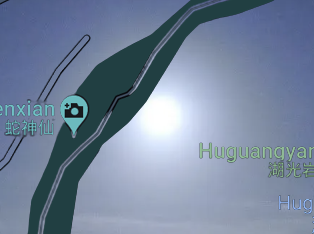

Goodbye，fuji
最近，我長了一些紅色的小疹子。在手腕上以及身體的許多角落。很久。很久了。 琦琦前天說她好想大哭一場，也許那樣就不會那麼難過了。
遠方是什麼呢/。
我們的手 環繞垂柳 你感受到了嗎
在很多鳥與片段的島，軟軟的泥碎，多餘的雲，鹽巴拉開淡水。輕輕的飄著，不偏向任何地方。所有的風都聚集過來了，一陣子。夕椏撥開蛋殼。不規則的裂縫，七零八落地掉下。她聽著海水拍打不安的陸地，很渴望此刻有人跟她講一個故事。那是很久以前的事了，在夕椏很老以後。年幼的琦琦趴在一隻小阿拉伯豹身上，背對著夕椏，卻彷彿望著她。她時不時順順小豹腹部的鬃毛，閉著眼睛呼吸它毛髮間散發出的細語。
琦琦：夕，我們還有多久才能離開這裡？
夕椏：這不好說。有時候，我希望一步也不要前行。有時候又幻想著風經過的所有地方。
琦琦：那我們跟著它一起吧，雖然會很累。
夕椏：好呀。
琦琦又摸了摸小豹子：要把它留在這裡嗎？
夕椏：你最懂它，你問問它呢？
琦琦：我捨不得問。它不誠實的。
夕椏：你不捨得它還是它不捨得你呢？
琦琦：這不好說。
夕椏：琦，我昨天捕魚的時候碰到一個猴人。他似乎是遇到了海難，被沖刷到這裡來的。我想今天請他來家裡吃晚飯。然後再想想辦法幫助他。
琦琦：嗯好。我去尋一些食材。
琦琦一邊摘果子一邊想像著猴人的模樣。島上的猴子也不少，但不知道為什麼都沒能和他們成為朋友。雖然他們有時候很調皮，會破壞她們的家，但也不礙事。修修補補本來就是這裡的常態，她們也懶得為這點小麻煩跟一群頑固不化的生物計較。這樣的小麻煩其實並不小。沒有人知道為什麼她們覺得這只是小麻煩，好像她們很需要麻煩一樣。猴人或許不一樣。琦琦咬了一口烏垃梅，決定讓猴人留下。只要她們對他好點，應該就能和他成為好朋友了。說不定那些小猴子會聽猴人的話，那樣以後就不會再被找麻煩了。
果然，有說有笑的。他來了。
琦琦把東西放門口，整了整衣服，調整一下面容。然而，笑容總是很難把握的。那大概是還不清楚自己的心情。嗯，成敗在今晚！可是剛走進去一點，就發現夕椏似乎在自說自話，但又很明顯在對話。她看著夕椏，從來沒見過的樣子。夕椏已經和他成為好朋友了嗎？夕椏還在等她的食材嗎？或許已經做好了，可以直接吃了。但琦琦好像也不餓，只是很想把食材給做了。她默默走到水池，把那些果子一顆一顆洗乾淨。再來是那顆筍，意外發現的，很少在這片土地生長的物種。還有一些她們去年一起種的絲瓜，是以前遊客從他們家鄉帶來的種子。這是她第一次見到成熟的絲瓜，雖然不知道該怎麼吃，還是自以為是的為此設計了幾個菜譜。
送走了猴人，夕椏遞給琦琦一張明信片。其實是一片乾枯的葉子。夕椏說那是粽葉。在有些地方，人們會把糯米包在裡面蒸了吃。即便是幹了，這葉子的味道還是很明顯。琦琦拿著它，味道忽明忽暗地滲透進皮囊，突然覺得她也有什麼東西可以用它包裹。
夕椏：我們把行李裝裡面吧。明天就可以出發了。
琦琦瞪大眼睛，覺得夕椏在開玩笑。小豹早就在琦琦的枕頭上睡著了。誰知道它正在什麼樣的夢鄉裡。
月亮來的很晚，幾乎是和太陽一起降臨的。明天，她們將會一起放棄尋找天使。有很多遙不可及的行星，同時凝視著海裡那些無數隻眼睛。距離是一種溫度，慢慢靠近，深入地心的衛星。我多麼希望那不是你。

今天早上我看到你， 在梦里的梦里的门里，有一道美味的佳肴静候一块布满缝隙的盘子。
你喝水了吗？早晨第一杯水在你的嘴里是什么模样的呢？是今天客厅的样子吗
お早う！
在你的心臟 中間 淡淡一吹
許多碎片 努力張開嘴
美味無花果
揚起的根
過去了
葉子 一片溪
向 像你的右邊
一串小小的沙灘
他們圍繞他們
品嚐一口清澈的葉
醒來了嗎
你的夢
踩著節節扁舟
哪裡有腳的喘息？
美妙的節西
something we don’t know
something we can be
re：隧道driving
心 不斷 不斷 不斷的 碎的過程- -- - -- --- - - - -- - - - --- --- - - ----\ican hea ryou wit houta soun d\-- - 癒- --- - - - -- - --- - - - -- - - - --- -- - - --- - --- - - -- - - - - - - - ---合的-長- - - - - -- --- - - --途 - --- - - - -- - - -- --跋 ------- ---- - - - -涉
即使愛到了盡頭
還是會回頭